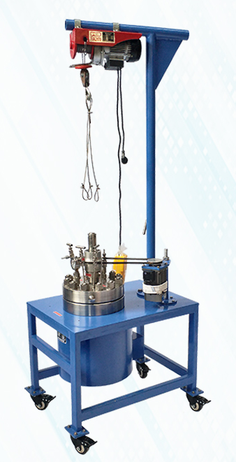

30L电动升降技术参数
FCF-30L高压反应釜技术参数

设备名称 | 设备技术 参数清单 | |
反应釜 | 釜体部分 | 1、容积:30L 2、材质：304/316L不锈钢 3、设计压力：12MPa 4、设计温度：350℃ |
搅拌部分 | 1、密封方式：磁转动、A型硬密封 2、搅拌转速：50-600转/每分 3、搅拌形式：磁力耦合驱动搅拌、变频调速 4、加热方式：电加热 5、加热功率：380V 10KW 6、电机功率：250W 7、温控精度：±1℃ | |
控制部分 | 1、转速调节 2、温度控制 3、温度显示 4、转速显示 | |
管口部分 | 1、搅拌口配磁力耦合器 2、气相口配针型阀（充各种适用气体） 3、放空口配针型阀 4、液相口配针型阀带釜内插底管（取样或上出料用） 5、压力安全防爆口配压力表及爆破片 6、测温口配测温探头 7、釜盖电动升降 | |
管口要求 | 1、取样口：∅4 2、进气口：∅4 3、放气口：∅4 4、冷却水进出口：∅4 5、测温口：∅4 6、压力表口：∅4 7、固体进料口：∅8 | |
备注 | ||